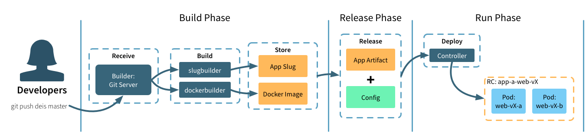

This is the multi-page printable view of this section. Click here to print.
Understanding Workflow
- 1: Concepts
- 2: Architecture
- 3: Components
1 - Concepts
Twelve-Factor Applications
The Twelve-Factor App is a methodology for building modern applications that can be scaled across a distributed system.
Twelve-factor is a valuable synthesis of years of experience with software-as-a-service apps in the wild, particularly on the Heroku platform.
Workflow is designed to run applications that adhere to the Twelve-Factor App methodology and best practices.
Kubernetes
Kubernetes is an open-source cluster manager developed by Google and donated to the Cloud Native Compute Foundation. Kubernetes manages all the activity on your cluster, including: desired state convergence, stable service addresses, health monitoring, service discovery, and DNS resolution.
Workflow builds upon Kubernetes abstractions like Services, Deployments and Pods to provide a developer-friendly experience. Building containers directly from application source code, aggregating logs, and managing deployment configurations and app releases are just some of the features Workflow adds.
Drycc Workflow is a set of Kubernetes-native components, installable via Helm. Systems engineers who are familiar with Kubernetes will feel right at home running Workflow.
See the components overview for more detail.
Container
[Container][] is an open source project to build, ship and run any application as a lightweight, portable, self-sufficient container.
If you have not yet converted your application to containers, Workflow provides
a simple and straightforward “source to Container image” capability. Supporting
multiple language runtimes via community buildpacks, building your application
in a container can be as easy as git push drycc master.
Applications which use either a Dockerfile or reference external Container images are launched unmodified.
Applications
Workflow is designed around the concept of an application, or app.
Applications come in one of three forms:
- a collection of source files stored in a
gitrepository - a Dockerfile and associated source files stored in a
gitrepository - a reference to an existing image at a Container repository
Applications are identified by a unique name for easy reference. If you do not specify a name when creating your application, Workflow generates one for you. Workflow also manages related information, including domain names, SSL certificates, and developer-provided configuration.
Build, Release, Run

Build Stage
The builder component processes incoming git push drycc master requests
and manages your application packaging.
If your application is using a buildpack, builder will launch an ephemeral job to extract and execute the packaging instructions. The resulting application artifact is stored by the platform for execution during the run stage.
If instead builder finds a Dockerfile, it follows those instructions to create a Container image. The resulting artifact is stored in a Drycc-managed registry which will be referenced during the run stage.
If another system already builds and packages your application, that container artifact can be used directly. When referencing an external Container image, the builder component doesn’t attempt to repackage your app.
Release Stage
During the release stage, a build is combined with application configuration to create a new, numbered release. New releases are created any time a new build is created or application configuration is changed. Tracking releases as a “write-only ledger” this way makes it easy to rollback to any previous release.
Run Stage
The run stage deploys the new release to the underlying Kubernetes cluster by changing the Deployment object which references the new release. By managing the desired replica count, Workflow orchestrates a zero-downtime, rolling update of your application. Once successfully updated, Workflow removes the last reference to the old release. Note that during the deploy, your application will be running in a mixed mode.
Backing Services
Workflow treats all persistent services such as databases, caches, storage, messaging systems, and other backing services as resources managed separately from your application. This philosophy aligns with Twelve-Factor best practices.
Applications attach to backing services using environment variables. Because apps are decoupled from backing services, they are free to scale up independently, to use services provided by other apps, or to switch to external or third-party vendor services.
See Also
2 - Architecture
All components are published as a set of container images which can be deployed to any compliant Kubernetes cluster.
Overview
Operators use Helm to configure and install the Workflow components which interface directly with the underlying Kubernetes cluster. Service discovery, container availability and networking are all delegated to Kubernetes, while Workflow provides a clean and simple developer experience.
Platform Services
Drycc Workflow provides additional functionality to your Kubernetes cluster, including:
- Source to Image Builder which compiles your Application code via Buildpacks or Dockerfiles
- Simple REST API which powers the CLI and any external integrations
- Application release and rollback
- Authentication and Authorization to Application resources
Kubernetes-Native
All platform components and applications deployed via Workflow expect to be running on an existing Kubernetes cluster. This means that you can happily run your Kubernetes-native workloads next to applications that are managed through Drycc Workflow.
Application Layout and Edge Routing
By default Workflow creates per-application Namespaces and Services so you can easily connect your applications to other on-cluster services through standard Kubernetes mechanisms.
The router component is responsible for routing HTTP/s traffic to your
Applications as well as proxying git push and platform API traffic.
By default, the router component is deployed as a Kubernetes service with type
LoadBalancer; which, depending on your configuration, will provision a
cloud-native load balancer automatically.
The router automatically discovers routable Applications, SSL/TLS certificates and application-specific configurations through the use of Kubernetes annotations. Any changes to router configuration or certificates are applied within seconds.
Topologies
Drycc Workflow no longer dictates a specific topology or server count for your deployment. The platform components will happily run on single-server configurations as well as multi-server production clusters.
3 - Components
All Workflow components are deployed as services (and associated controllers) in your Kubernetes cluster. If you are interested we have a more detailed exploration of the Workflow architecture.
All of the componentry for Workflow is built with composability in mind. If you need to customize one of the components for your specific deployment or need the functionality in your own project we invite you to give it a shot!
Controller
Project Location: drycc/controller
The controller component is an HTTP API server which serves as the endpoint for
the drycc CLI. The controller provides all of the platform functionality as
well as interfacing with your Kubernetes cluster. The controller persists all
of its data to the database component.
Passport
Project Location: drycc/passport
The passport component exposes a web API and provide OAuth2 authentication.
Database
Project Location: drycc/postgres
The database component is a managed instance of PostgreSQL which holds a majority of the platforms state. Backups and WAL files are pushed to object storage via WAL-E. When the database is restarted, backups are fetched and replayed from object storage so no data is lost.
Builder
Project Location: drycc/builder
The builder component is responsible for accepting code pushes via Git and managing the build process of your Application. The builder process is:
- Receives incoming
git pushrequests over SSH - Authenticates the user via SSH key fingerprint
- Authorizes the user’s access to push code to the Application
- Starts the Application Build phase (see below)
- Triggers a new Release via the Controller
Builder currently supports both buildpack and Dockerfile based builds.
Project Location: drycc/imagebuilder
For Buildpack-based deploys, the builder component will launch a one-shot Job
in the drycc namespace. This job runs imagebuilder component which handles
default and custom buildpacks (specified by .packbuilder). The completed image
is pushed to the managed Container registry on cluster. For more information
about buildpacks see using buildpacks.
Unlike buildpack-based, For Applications which contain a Dockerfile in the root
of the repository, it generates a Container image (using the underlying Container engine).
For more information see using Dockerfiles.
Object Storage
Project Location: drycc/storage
All of the Workflow components that need to persist data will ship them to the object storage that was configured for the cluster.For example, database ships its WAL files, registry stores Container images, and slugbuilder stores slugs.
Workflow supports either on or off-cluster storage. For production deployments we highly recommend that you configure off-cluster object storage.
To facilitate experimentation, development and test environments, the default charts for Workflow include on-cluster storage via storage.
If you also feel comfortable using Kubernetes persistent volumes you may configure storage to use persistent storage available in your environment.
Registry
Project Location: drycc/registry
The registry component is a managed container registry which holds application images generated from the builder component. Registry persists the Container image images to either local storage (in development mode) or to object storage configured for the cluster.
Quickwit
Project Location: drycc/quickwit
Quickwit is the first engine to execute complex search and analytics queries directly on cloud storage with sub-second latency. Powered by Rust and its decoupled compute and storage architecture, it is designed to be resource-efficient, easy to operate, and scale to petabytes of data.
Quickwit is a great fit for log management, distributed tracing, and generally immutable data such as conversational data (emails, texts, messaging platforms) and event-based analytics.
Fluentbit
Project Location: drycc/fluentbit
Fluent Bit is a fast and lightweight telemetry agent for logs, metrics, and traces for Linux, macOS, Windows, and BSD family operating systems. Fluent Bit has been made with a strong focus on performance to allow the collection and processing of telemetry data from different sources without complexity.
Victoriametrics
Project Location: drycc/victoriametrics
Victoriametrics is a system monitoring and alerting system. It was opensourced by SoundCloud in 2012 and is the second project both to join and to graduate within Cloud Native Computing Foundation after Kubernetes. Victoriametrics stores all metrics data as time series, i.e metrics information is stored along with the timestamp at which it was recorded, optional key-value pairs called as labels can also be stored along with metrics.
HelmBroker
Project Location: drycc-addons/helmbroker
Helm Broker is a Service Broker that exposes Helm charts as Service Classes in Service Catalog. To do so, Helm Broker uses the concept of addons. An addon is an abstraction layer over a Helm chart which provides all information required to convert the chart into a Service Class.
Victoriametrics
Project Location: drycc/victoriametrics
Victoriametrics is an open-source systemsmonitoring and alerting toolkit originally built atSoundCloud.